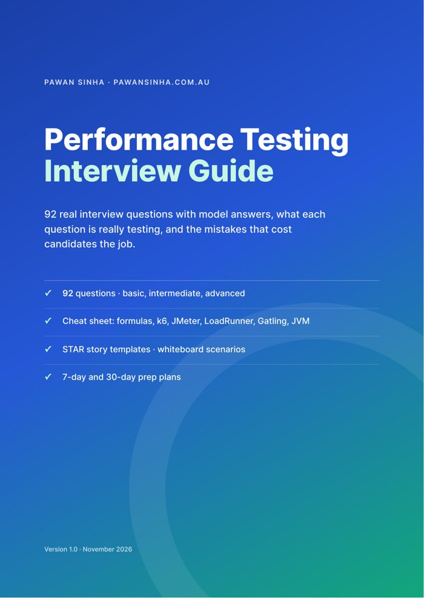
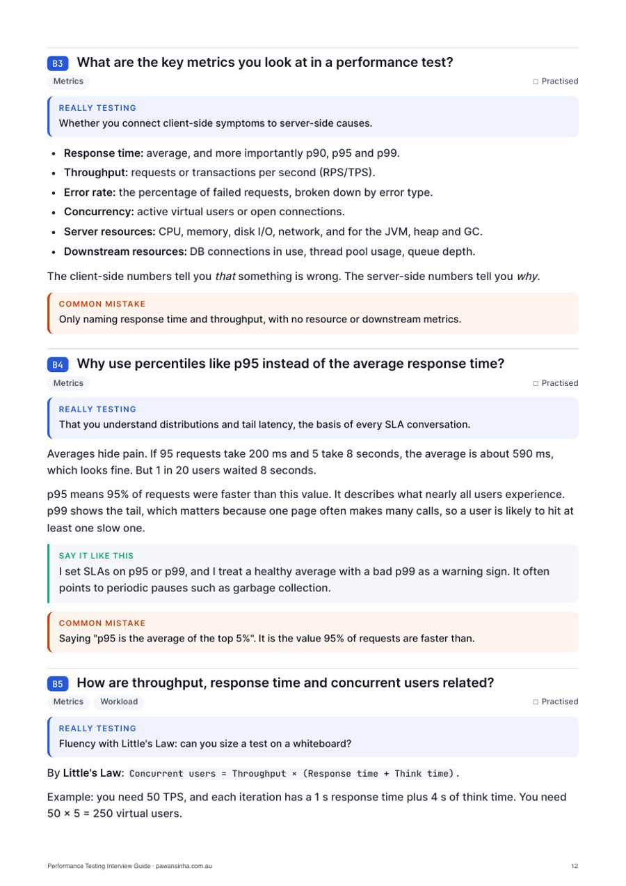
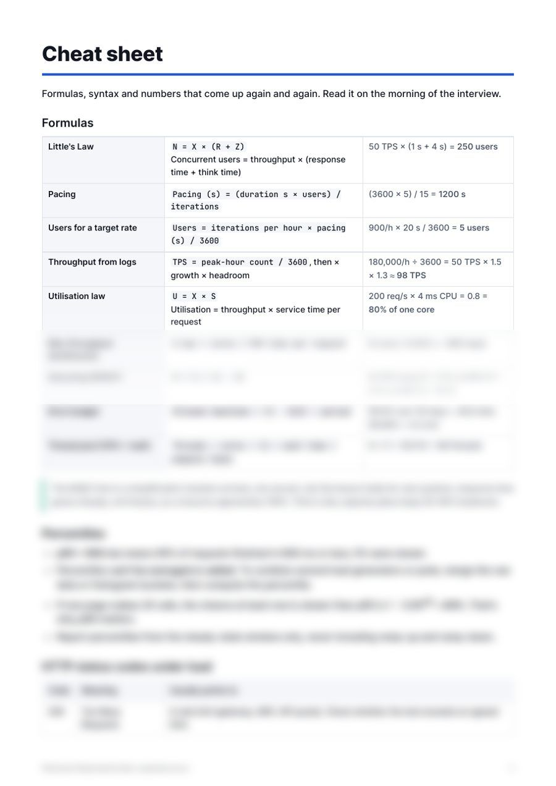

🎯
What they're really testing
Every question says which skill or judgement the interviewer is checking, so you aim your answer at what earns the marks.
PDF guide · for performance testers and engineers
92 real performance testing interview questions with model answers, plus what each question is really checking and the mistake that costs candidates the job. A cheat sheet, STAR story templates and prep plans turn reading into practice.
A$19one-off · 64-page PDF · instant download

What's inside
Every question says which skill or judgement the interviewer is checking, so you aim your answer at what earns the marks.
The weak answer for each question, from mixing up checks and thresholds to averaging percentiles. Know it, avoid it.
Little's Law, pacing, utilisation and error budgets with worked numbers, plus key k6, JMeter, LoadRunner, Gatling, JVM, Linux and PromQL syntax.
Five fill-in templates for the behavioural questions that decide senior interviews, and which story to use for which question.
Flash sale, 3× payments peak, slow 9 am logins, microservices migration and "Black Friday in two weeks", with a frame for any scenario.
Day-by-day prep, questions to ask the interviewer, and a self-review scorecard you can use after every practice answer.
Free sample
The model answers are shortened here. In the guide each one is in full, with a "Say it like this" line where it helps.
Averages hide pain. If 95 requests take 200 ms and 5 take 8 seconds, the average is about 590 ms, which looks fine. But 1 in 20 users waited 8 seconds…
Checks are assertions on individual responses, such as "status is 200". A failed check doesn't fail the test; it's recorded as a pass rate. Thresholds are pass/fail rules for the whole test…


Free page or guide?
The questions and model answers are free on the interview prep page. The guide is for when you want to prepare properly.
| Included | Free page | Guide (A$19) |
|---|---|---|
| 92 questions with model answers | ✓ | ✓ |
| What each question is really testing | – | ✓ |
| Common mistake for every question | – | ✓ |
| Cheat sheet: formulas, tool syntax, JVM and Linux | – | ✓ |
| STAR templates and whiteboard scenarios | – | ✓ |
| 7-day and 30-day prep plans, questions to ask, scorecard | – | ✓ |
| Offline and printable, with contents and page numbers | – | ✓ |
Who it's for
Questions
A 64-page A4 PDF with a clickable contents page. It reads well on a laptop, tablet or phone, and prints cleanly.
k6, JMeter, LoadRunner and Gatling, plus APM and observability (Dynatrace, Datadog, Prometheus, Grafana, Splunk), JVM and databases, and cloud and Kubernetes. Tool details were checked in November 2026.
No. They're questions I've been asked, or asked candidates, over 12+ years in banking, payments and gaming. The guide never invents stories for you: the STAR templates help you tell your own.
Yes. When the guide is updated, you can download the new version from your Gumroad library at no cost.
Email hello@pawansinha.com.au and I'll sort it out. Please don't share or resell the PDF.
Book a mock performance testing interview: a paid 60-minute session at your level, with written feedback.
A$19, one-off. 92 questions, cheat sheet, STAR templates and prep plans.